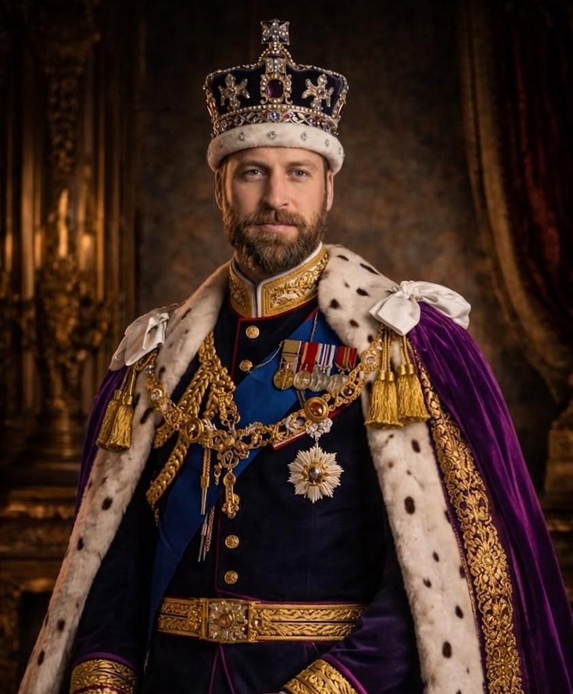
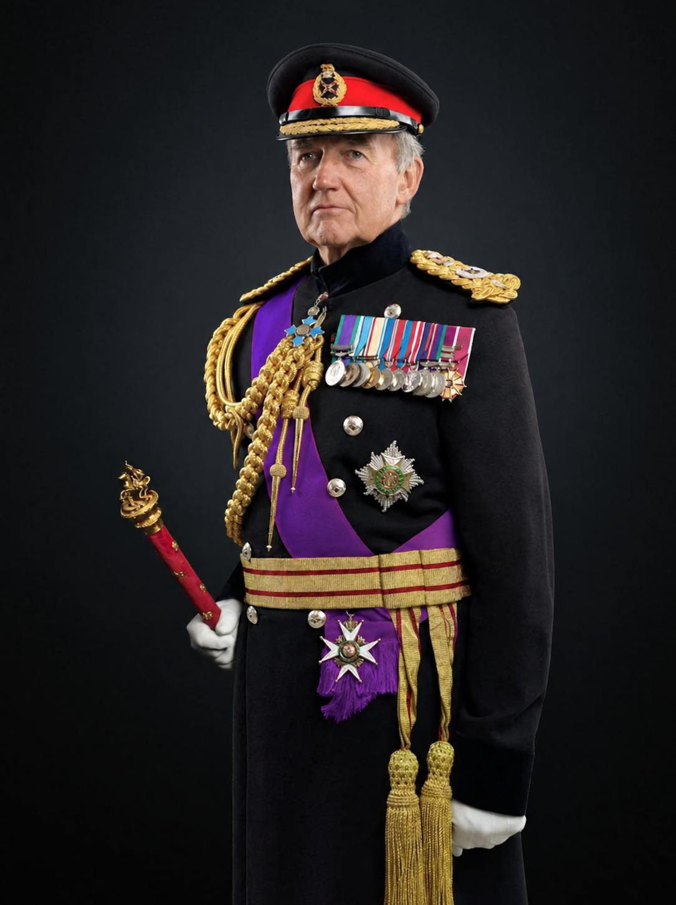
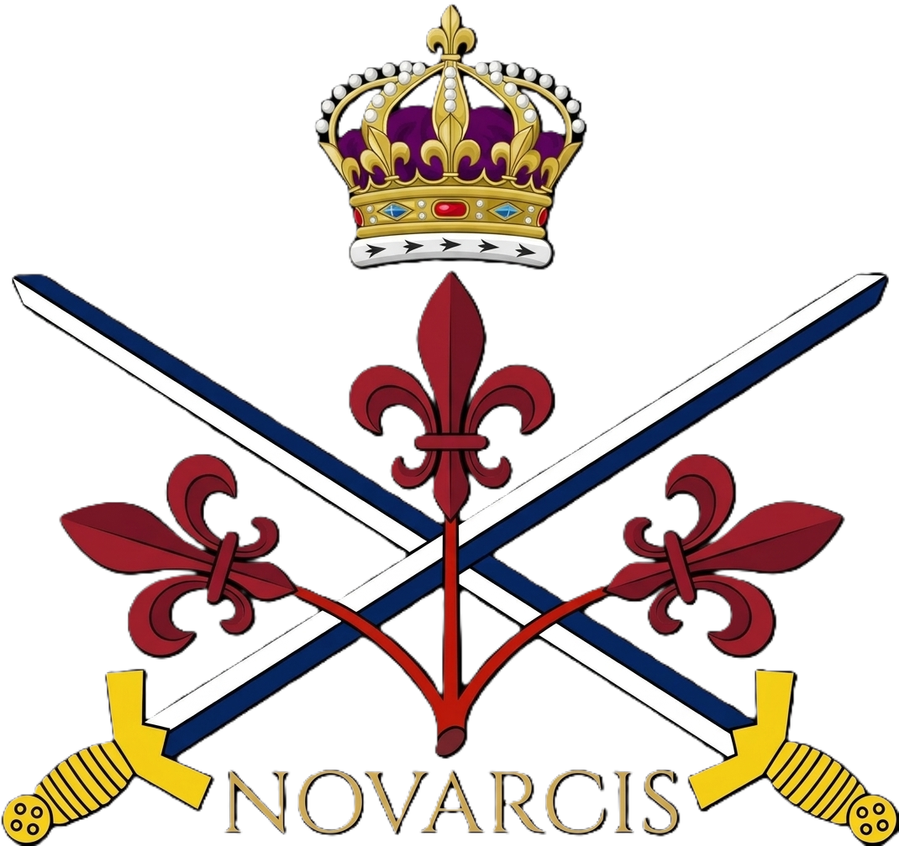
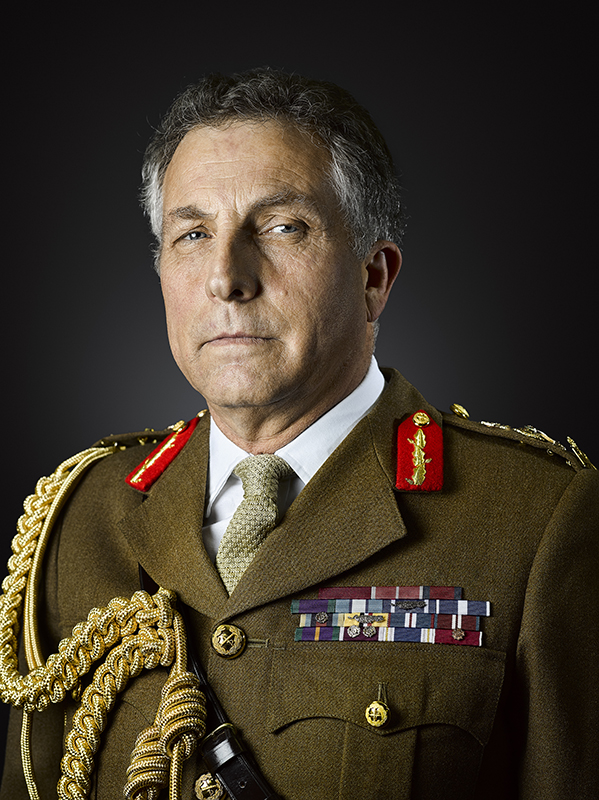
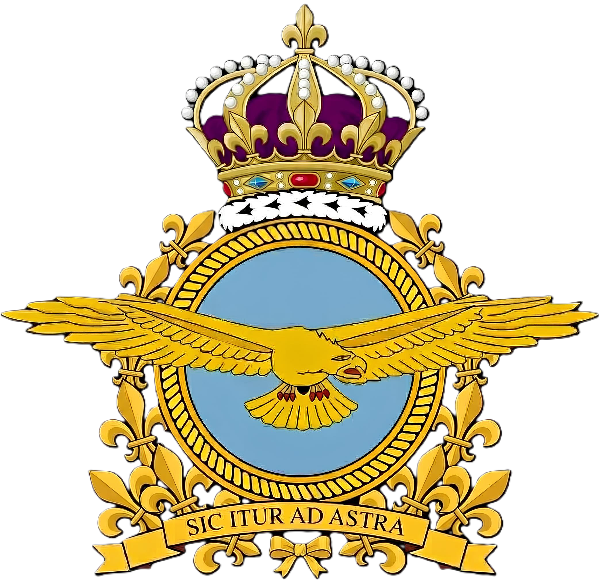
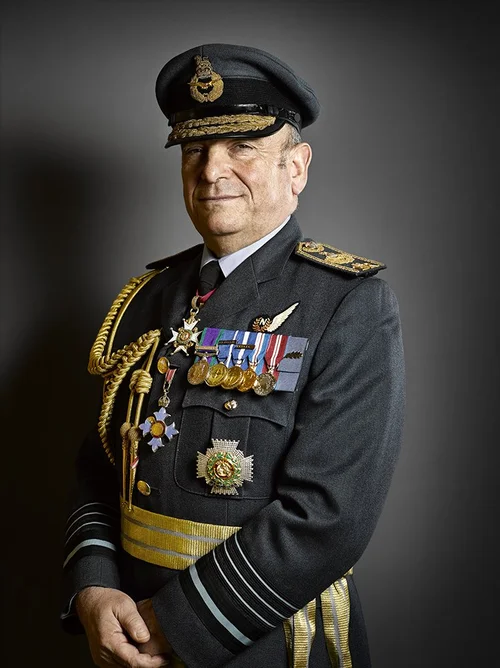
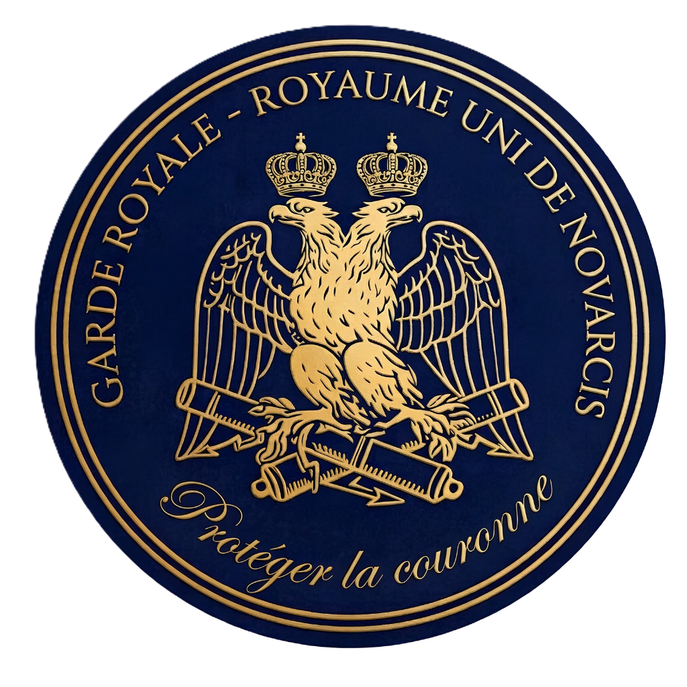
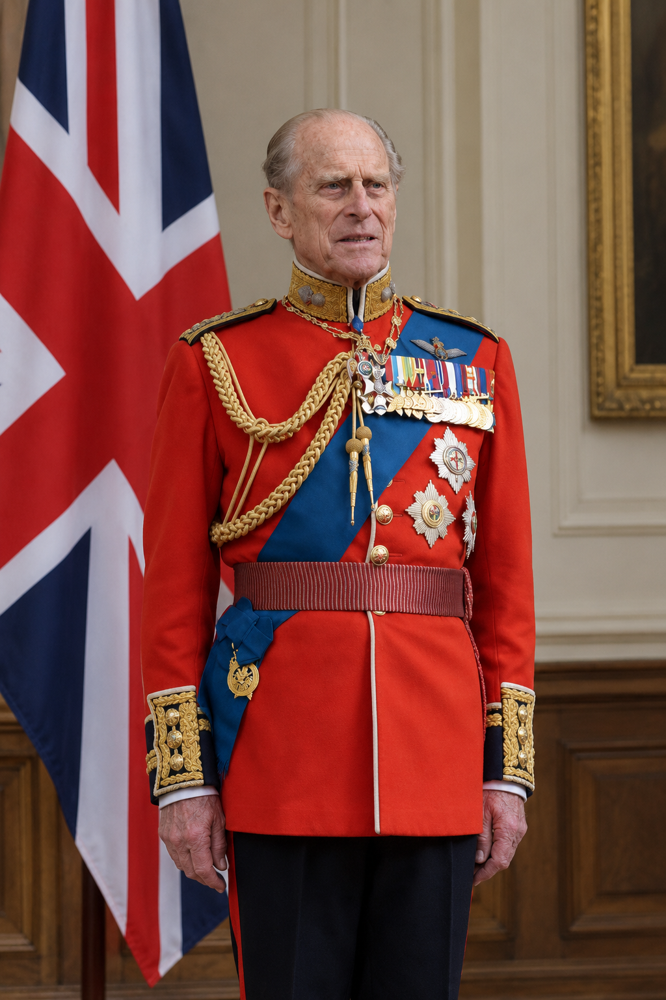

Le Haut Commandement de la Défense
Le commandement suprême des Forces Armées du Royaume-Uni de Novarcis est exercé par le Souverain, S.M. le Roi James Ier. La gestion stratégique et opérationnelle est confiée au Chef d'État-Major de la Défense (Chief of the Defence Staff) et aux commandants généraux.
Commandants Suprêmes


Armée de Terre (British Army)

Composante terrestre principale des forces armées, l'Armée de Terre assure la défense du territoire métropolitain et la projection de forces blindées et d'infanterie d'élite.
Chef d'État-Major de l'Armée de Terre

Royal Air Force (RAF)

La Royal Air Force assure la supériorité aérienne, la défense du ciel novarcien, le transport stratégique et l'appui aux opérations combinées.
Chef d'État-Major de la RAF

Garde Royale de Sa Majesté

Unité d'élite d'infanterie et de cavalerie d'État chargée de la protection rapprochée de la Famille Royale, des palais et du protocole des cérémonies de la Couronne.
Haut Commandement de la Garde Royale
